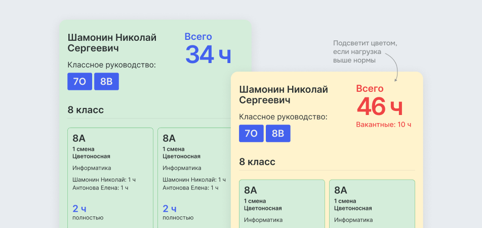

Наглядная нагрузка по каждому преподавателю
Сервис даёт контроль над нагрузкой преподавателей. По фамилии можно посмотреть нагрузку в конкретных классах, проверить классное руководство и заведование кабинетом.
«Тарификатор» показывает вакантные часы, отмечает педагогов с неполной ставкой, а при подборе предлагает специалистов из нужной предметной области. Сервис не ограничивает выбор, поэтому директор может учитывать предпочтения учителей по классам.
